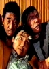

Also known as:Kung Fu On Sale
Country:TW, 86 minutes
Spoken languages:Mandarin
Genres:Action, Comedy
Director(s):Jen-Ping Su
Writer(s):Sung-Po Liu
Video Codec:Unknown
Number: 1375


Certification:
Storyline:
This non-stop Kung-Fu action/comedy film is about a young man whose father forbids him from continuing his martial arts training. Leaving home, he soon falls under the guidance of a Kung-Fu master who prepares him for the fight of...
Cast: 


Medium: Original DVD,
Comments: Part of: Bruce Lee / Brandon Lee Action Pack
Loaned: No
Aspect ratio: Unknown